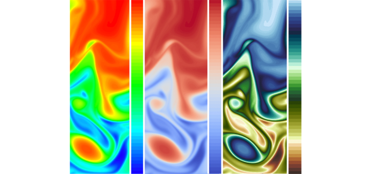
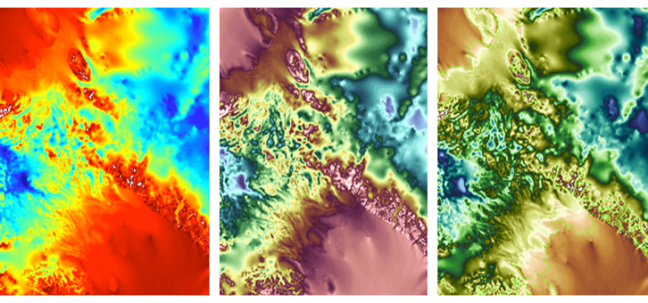
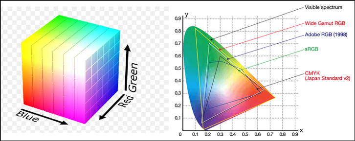
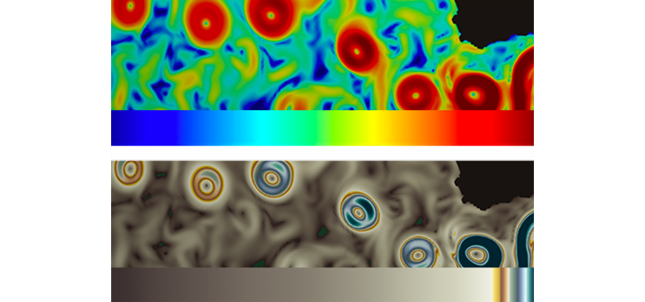
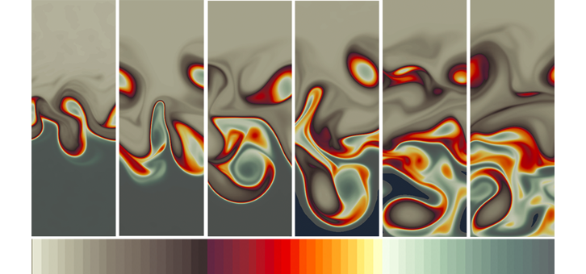
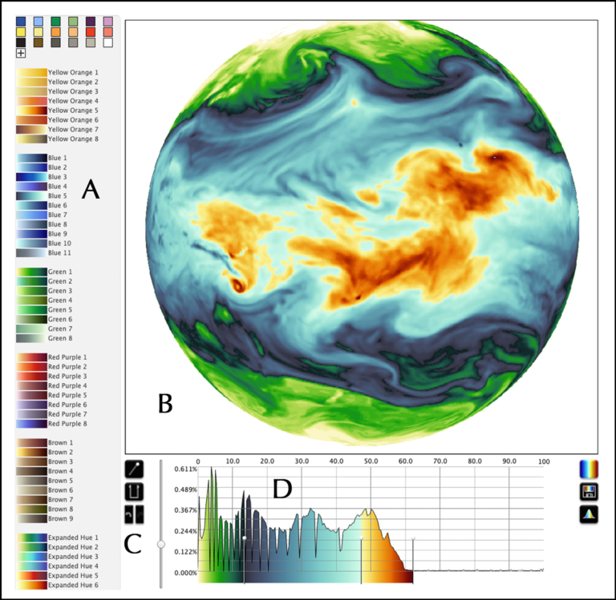
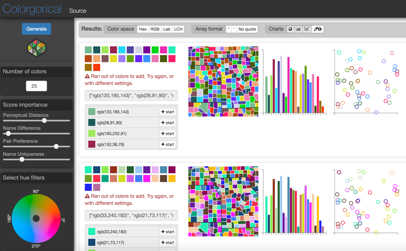

- 본 글은 번역글입니다.
원본 주소 : https://eos.org/features/visualizing-science-how-color-determines-what-we-see
번역 철학 : 매끄럽게 읽으실 수 있는 적절한 의역을 지향합니다.
전문 용어 : 가급적 우리말 용어를 사용하고자 하며, 원어를 병기합니다.
과학 시각화: 색상은 우리가 무엇을 볼지 어떻게 결정하는가
Stephanie Zeller, David Rogers (2020. 05. 21.)
과학적 정보를 분석하고 나눔에 있어 색상은 큰 비중을 차지합니다. 새로운 도구를 활용하여 데이터에 정확하고 효과적인 색상을 적용할 수 있습니다.

색상은 우리의 정보 인지에 강하게 영향을 끼칩니다. 특히 정보의 밀도가 높거나, 다차원이거나, 미묘할 때 그러는데 과학에서 다루는 데이터들이 대개 이렇습니다. 시각적으로 어떤 색상을 보일지 결정하는 일은 과학적인 결과를 정확하게 해석하고 효과적으로 표현하는 데 매우 중요합니다.
“언어는 본질적으로 편향되지만 시각화를 통해 우리는 데이터로 하여금 스스로 말하게 할 수 있습니다.” Los Alamos National Laboratory의 지구계 모델러이자 전산유체역학 전문가computational fluid dynamicist인 Phillip Wolfram의 말입니다. Los Alamos에서는 사막을 수놓은 산쑥sagebrush처럼 데이터 시각화data visualization가 아주 흔합니다. 전문가 팀들은 매일 뭉텅이의 데이터를 어떻게 표현할지에 대해 연구실의 지구과학자들, 컴퓨터 과학자들과 함께 언쟁하고, 빚고, 색칠합니다. 데이터의 다양한 특성들을 표현하기 위해 색상을 선택하는 일은 고통스러운 데이터 수집에 이은 정성들인 분석과 발견 사이에 놓인 최후의 장벽이며 뒤늦게 떠오르는 설익은 생각들에 반복적으로 응대해야만 하는 작업입니다.
웬만한 시각화 소프트웨어들에 컬러맵이 탑재되고 있습니다. 컬러맵이란 연구자들이 데이터를 뚝딱 색상으로 나타내어color-encoding 평가할 수 있도록 선별된 표준 그러데이션gradation입니다. 그러나 모든 데이터 시각화가 동일하게 이루어지고 있지 않습니다. 관습적인 rainbow colormap과 같은 표준 색상에 대한 무분별한 사용을 비난하는 논문(예: Borland and Taylor, 2007)이 급증하고 있음에도 불구하고, 기본 막대그래프부터 생물지구화학biogeochemical 데이터처럼 복잡한 양상까지 시각화가 넘쳐나고 있습니다.
“다양한 데이터에 동일한 컬러맵을 적용하면 단조로울 뿐 아니라 혼란스럽다”
지난 12월 캘리포니아 샌프란시스코에서 열렸던 2019 AGU Fall Meeting에서는 컨벤션 센터의 광활한 메인 홀이 줄줄이 걸린 포스터로 가득 찼는데, 포스터에 담긴 온도 스케일, 엽록소 농도, 지면의 표고 등 데이터의 종류가 다양함에도 불구하고 똑같은 밝기의 표준 컬러맵으로 도배돼 있었습니다.
“다양한 데이터에 동일한 컬러맵을 적용하면 단조로울 뿐 아니라 혼란스럽다”고 콜로라도 볼더 대학의 Cooperative Institute for Research in Environmental Sciences (CIRES) 소속 senior research scientist Rick Saltus는 지적합니다. “여러분은 효과적이면서도 효율적으로 소통하고 싶어하지만, 다양한 개념을 같은 색으로 칠해놓으면 방해가 될 뿐입니다.”
전 세계의 색상 연구자들과 시각과 전문가들은 이와 같은 현 상황을 바꾸고자 합니다. 일부에서는 과학자들이 맥락을 통해 색상, 밝기, 채도의 균형을 적절하게 잡아주어 점점 커져가는 데이터셋을 더 정확하고 직관적으로, 그러면서도 충실하게 다루도록 해주는 새로운 도구를 개발중입니다.
우리는 색을 어떻게 보는가
한 세기도 더 전에, Albert H. Munsell은 뉴턴과 괴테의 업적 위에서 우리가 현대에 쓰는 개념인 컬러 “매핑mapping“을 만들었습니다 [Munsell, 2015]. Munsell의 연구는 정렬된 형태의 색공간 - 색채hue(색상color), 값value(명암brightness or darkness), 채도chroma(색상의 강도)를 표현하는 3차원 그림 - 을 처음으로 지각할 수 있도록 만든 것입니다 [Moreland, 2016].
비슷한 시기인 1900년대 초반 Hermann Grassman이 내놓은 선형대수 이론은 추상수학을 해독하여 고차원의 종이접기와 비슷한 특성을 밝혔습니다. 이로써 Grassmann은 벡터 공간이라는 개념을 창조했고, 지정된 영역 내부의 색상 인식을 근사 계산할 수 있게 되었습니다 [Grassmann, 1844]. 색상에 대한 연구는 이내 근사의 한계를 벗어났습니다. 색상은 수치적으로 부호화되어 포물선을 따라 뿌려졌습니다. 색상 인식은 빛에 좌우되는 주관적인 경험이자 동시 대비simultaneous contrast(나란히 놓인 색상들이 서로의 인식에 영향을 주는 현상)이며, 보는 이의 눈 속에 있는 원추세포 광수용체의 반응이기 때문에[Albers, 2006; Itten, 1970] 이 정도의 정확성 확보는 필수적입니다.

주시자의 눈*
(*역주: 인간의 시각이 아닌 절대자, 여기에선 수학의 시각으로 색상을 보는 것을 말합니다.)
현대의 “색 공간color palette“ (Figure 2)은 두 가지, 절대absolute와 비절대nonabsolute로 나뉘어집니다. 절대 색 공간은 인간의 인식에 기반하여 색상을 정의합니다. 비절대 색공간이 우리에겐 더 친숙한데, red-green-blue (RGB)와 cyan-magenta-yellow-black (CMYK) 으로 색상을 정의하며 카메라와 같은 입력장치, 모니터 같은 출력장치에 의존적입니다.
흔히 사용되는 rainbow map은 비절대 색공간에서 정의됩니다. rainbow map의 그레이디언트gradient는 채도가 높은 공간을 절대 색 공간에서의 수학적 분리를 고려하지 않고 순회합니다.
이렇게 배열된 색상은 색상간에 극명한 대비를 갖게 되어 데이터셋의 다른 값들을 시각적으로 선명하게 표현하기 때문에 대부분의 과학자들이 rainbow map을 기본으로 사용하고 있습니다.

그러나 최근 몇 년간 연구자들은 rainbow colormap의 지위와 흔히 그렇듯 별 고민 없이 적용됐을 때 데이터 표현에 미치는 영향에 도전하고 있습니다. Rainbow 매핑은 데이터의 바다를 눈부신 네온 그린neon green으로 씻어버리며 색상 해석, 집중 편향을 일으켜 그릇된 판단을 유도합니다 [Borland and Taylor, 2007; Liu and Heer, 2018; Ware et al., 2019, 2017]. 인지과학자들은 이 이슈를 “인지적으로 균일한 컬러맵perceptually equalized colormaps“, 즉 절대 색공간에서 균일하게 분포한 값들로 이루어진 컬러맵을 이용해 해결하려는 시도를 하고 있습니다. 그러나 이러한 컬러맵은 rainbow colormap이나 그 사촌들처럼 연구자들이 표현하고자 하는 데이터와 무관하게 만들어졌습니다. 이는 데이터의 독특한 특성과 수요를 고려해야 한다는 의미와 상반되게 범용으로만 만들어지고 있다는 의미입니다. 데이터가 점점 복잡해지고 급속도로 팽창하는 이 시대에 많은 시각화 전문가들은 이런 범용 컬러맵의 용처가 제한적이라는 데 동의합니다.
친숙함과 명확성 균형잡기
그럼에도 불구하고 과학자들과 시각화 전문가들은 rainbow, viridis, cool-warm divergent, jet, turbo(인기를 끌고 있는 구글의 차세대 rainbow) 데이터와 무관한 표준 맵의 틀을 깨려는 시도를 이어가고 있습니다. 편의성, 사용자 친화적 컬러 매핑 자원, 활용 가능한 전문 지식이나 가이드, 해당 분야에서의 선례, 그리고 연구자들 스스로 새로운 색상 규약에 익숙해질 시간이 모두 부족하여 적용이 잘 되지 않고 있습니다 [Moreland, 2016].
Wisconsin-Madison 대학과 Wisconsin Institute of Discovery의 심리학자 Karen Schloss는 이렇게 말합니다. “사람들이 시각화 결과물을 접할 때, 그림이 컨셉을 어떻게 반영할지에 대한 기대가 있습니다.” Schloss와 그의 팀은 새로운 컬러맵 구현 문제를 해결하려 노력하고 있으며, 한편으로 뿌리깊은 집단적 친숙함과 차세대 색상 도구 사이의 균형을 이해하고자 합니다.
“우리는 이런 기대를 추론 매핑inferred mapping이라고 부릅니다.” Schloss는 또 이렇게 말합니다. “만약 누군가가 평생 특정 분야에 종사했다면, 그 분은 자신이 표현하려는 데이터에 대한 색상, 즉 추론 매핑이 있을 것입니다. 우리는 이런 편향을 이해하는 한편 이런 전문가들로 하여금 그들의 규약을 완전히 포기하도록 조심스레 제안하려고 시도하고 있습니다. 균형점을 찾아내야 합니다.”
이런 균형점 탐색에 있어 시각화 전문가들은 과학자들이 그들의 데이터로부터 무엇을 필요로 하는지, 그리고 이러한 수요를 데이터가 갖고 있는 정보의 타협 없이 어떻게 전달할지에 집중하고 있습니다.
과학자들에겐 무엇이 필요한가?
Francesca Samsel은 University of Texas at Austin에 위치한 Texas Advanced Computing Center (TACC)의 연구원이며, 그의 팀은 과학자들의 수요를 데이터 시각화에 대한 세 개의 범주, 즉 인자 인식feature identification, 탐색exploration, 소통communication와 더불어 이상치 검출pinpointing outlier, 관계 설정determining relationships 같은 세부 범주로 묘사합니다. 큰 데이터를 해석할 때 과학자들은 특정 인자(예를 들면 해수의 유동 방향이나 특정 지점의 수온)를 알려진 데이터 범위에서 찾는 경향이 있습니다. 또는 전반적인 관찰을 위해 전체적으로 훑어보기도 하고, 대학, 동료, 또는 대중에게 알리기 위해 특정한 특성을 찾아봅니다. 때로는 이상치에만 관심이 있기도 하고 특정한 변수가 다른 변수에 어떻게 영향을 미치는지(예를 들면, 두 해류가 만날 때 수온은 어떻게 변하는지)에만 관심이 있기도 합니다.
Wolfram에 따르면 시각화는 과학자들끼리 정량적인 연구 결과물을 가지고 상호 작용하는 방법이며 그들이 데이터에 기반한 논쟁을 하는 방법입니다. 그는 Los Alamos에 있는 사무실에서 지구계와 기후 데이터를 들여다보며 (위성에서 찍은 것 같은) 오버헤드 플랏overhead plot 제작을 포함해 정기적으로 시각화 작업을 합니다. “제가 찾는 것은 과학적인 질문과 밀접하게 연관돼 있습니다.” “저는 보통 지리공간 관계geospatial relationships를 이해하고자 하는데, 특히 오버헤드 플랏에서 회오리eddies같은 표면 인자surface feature를 봅니다.” 선진 컬러 매핑 도구들은 Jet 같은 표준 맵과 달리 Wolfram이 분석하는 데이터 인자들의 세부를 크게 잃지 않도록 해줍니다 (Figure 3).

Samsel을 비롯한 일각에서는 데이터와 동떨어진 색상 매핑 전략은 색상이 가까운 순으로 정렬(예: 무지개)되지 않았거나 명도가 특별히 처리되지 않았다면, 또는 컬러맵에 내재된 복수의 그레이디언트가 특정 데이터셋을 위해 마련된 것이 않았다면, 이는 사실상 인지 편향이라고 주장합니다 [Borland and Taylor, 2007]. 연구 프로세스 전반에 걸친 시각화의 중요성을 생각하면 정보를 최대화하고 색상과 관련된 방해물을 최소화할 필요가 있습니다. Samsel, Schloss와 더불어 콜로라도 볼더 대학 VisuaLab을 이끄는 Danielle Szafir 교수 등은 직관적 조작이라는 목표를 유지하며 이러한 도구를 만들기 위한 구체적인 조치들을 수행해오고 있습니다.
새로운 색상 도구 세트
데이터 시각화로 전업하기 전 25년간 예술가로 훈련받고 종사해 온 Samsel은 색채 이론에 대한 지식을 컬러맵의 도전적인 과제들을 수행하는 데 사용하고 있습니다. 과학자들이 본인 데이터가 요구하는 수준의 해상도를 제공하는 방법에 대해, “우리는 연구를 수행하던 중 인지적으로 균일한 컬러맵이 과학자들에게 항상 최고의 해법은 아니라는 것을 알았습니다.”라고 Samsel은 말합니다. 그의 설명에 따르면, 색상간 상호작용에는 미묘함과 복잡성이 있어 보는 이의 연관반응에 영향을 미치며, 데이터 내부의 다른 인자들의 상대적인 중요성을 이끌어내는데 영향을 미친다고 합니다.
Samsel의 연구는 다른 데이터셋마다의 수요에 맞게 컬러맵을 인터랙티브하게 미세조정할 수 있는 응용 프로그램인 ColorMoves의 탄생에 박차를 가했습니다. ColorMoves의 온라인 인터페이스는 의미 연합semantic association이라 불리는, 자연 세계의 팔레트를 반영하면서도 분별력을 증대시킬 수 있는 컬러맵들을 제공합니다 [Ware et al., 2019]. (*역주: ColorMoves에서 생성된 colormap은 Matlab과 Python Matplotlib에서 사용할 수 있도록 스크립트를 통해 변환할 수 있습니다)
1990년대 초 인지과학 연구자들은 Samsel과 동료들이 색채 이론을 통해 재확인했듯 사람의 눈이 밀집된 데이터에서 패턴을 분리할 때, 색상보다 명도의 차이를 더 민감하게 파악한다는 것을 알아냈습니다 [Ware et al. 2019; Rogowitz, 2013]. 이 정보를 색상과 채도의 그러데이션과 함께 사용하여, Samsel은 선형(단일 색상 그레이디언트), 발산(중앙에서 만나는 이중 색상 그레이디언트), 그리고 wave colormap이라 부르는, 많은 색상을 거치며 명도 분포를 보이는 순환 맵을 만들어 냈습니다 (Figure 4). “이렇게 하면 맵 전반에 걸쳐 대비contrast의 밀도를 크게 높일 수 있어요. 연속 데이터의 많은 인자들을 해석할 수 있죠.”

ColorMoves의 인터페이스는 사용자로 하여금 여러 컬러맵을 자신의 데이터에 뿌리고 결과를 실시간으로 보며 색상과 대비가 적절한지 보고 인터랙티브하게 조정할 수 있게 해줍니다 (Figure 5). “데이터 탐색을 위한 도구로 만들려던 것은 아니었지만, 과학자들은 이걸 우선으로 사용하더군요” 라고 Samsel이 말했듯, 탐색에 사용되고 있습니다.

Wisconsin-Madison 대학에서 Visual Reasoning Lab을 이끄는 Schloss는 색상 인지를 통해 시각적 소통을 더 효율적이고 효과적으로 하는 데 집중하며, 고대비 색상과 심미주의의 균형을 잡는 것을 목표로 하고 있습니다. “사람들은 시각화 결과물을 만드는 것 만큼이나 커스터마이제이션을 큰 자산으로 생각합니다. 그리고 저는 커스터마이제이션을 쉽게 해서 사람들로 하여금 색상 인코딩과 자신의 데이터를 표현하는 데 더 집중하도록 하고 싶어요.”
시각화를 위해 컬러맵을 최적화하는 노력의 일환으로, Schloss와 동료들은 Colorgorical이라는 도구를 만들었습니다. Colorgorical은 조정 가능한 슬라이더를 여러개 탑재하여 색상간의 인지 거리, 색상 이름간의 차이, 색상환에서의 색상간 거리를 지정할 수 있고, 특정한 색상명을 지정할 수 있습니다 (예: peacock, sapphire versus blue) [Heer and Stone, 2012]. 사용자들은 색상과 명도 범위를 원하는 커스텀 팔레트 범위 안에서 지정해서 “seed color”를 중심으로 색상 팔레트를 만들 수도 있습니다 (Figure 6). (* 역주: Colorgorical은 Python 2.7에서 동작하도록 제작되었습니다, github link)

상자 속의 디자이너
Scholoss, Samsel, Szafir는 이 분야의 향후 연구 방향은 디자이너의 맞춤형 작업 기반, 과학자들이 사용하고 있는 시각화 소프트웨어에 탑재 가능한 컬러맵 자동 생성기 제작이라는 데 동의합니다.
“어떻게 하면 디자이너의 실무 사례들을 일일이 캐묻지 않고 녹여낼 수 있을까요? 단순화 끝에 불완전해지는 일련의 규칙들 말고 다른 방식으로 말입니다.”
ATLAS Institute 컴퓨터공학과에 있는 Szafir와 그의 팀은 이 비전을 실현하고 있습니다. “우리는 자신의 장소에서 일하고 있는 사용자들을 어떻게 만날지 생각하기 시작했습니다.”
아쉽지만, 개별 디자이너들이 제공할 수 있는 세부에 대한 집중력과 창의성에는 한계가 있습니다. 따라서 Szafir의 팀은 실질적으로 “상자 속의 디자이너”같은 역할을 하는 제품을 만들 수 있을지 궁금해 했습니다. “어떻게 하면 디자이너의 실무 사례들을 일일이 캐묻지 않고 녹여낼 수 있을까요? 단순화 끝에 불완전해지는 일련의 규칙들 말고 다른 방식으로 말입니다.”
Szafir와 동료들은 전문가가 디자인한 222개의 컬러 그레이디언트에 기반한 머신 러닝 모델을 만들고 디자이너의 작업물을 흉내내서 컬러맵을 생성하도록 했습니다. Szafir와 동료들이 최근 논문에 발표했듯, 자동적으로 생성된 최종 컬러맵은 “디자이너가 만든 것처럼 정확하고 심미적으로 만족스러운 시각화 결과물이었으며 (중략) 기존의 수학적 접근법을 능가했습니다.” [Smart et al., 2020].
팀의 성공에도 불구하고 완전 자동화는 단점이 있다고 Szafir는 지적합니다. 알고리즘이 훈련할 데이터가 필요하다는 점인데, 본문에서는 비슷한 형태를 가진 3차원 색 공간의 컬러맵 모음을 말하고 있습니다. 알고리즘은 훈련할 데이터를 바탕으로 일련의 규칙을 수립한 뒤 이 규칙에 기반해서 새로운 컬러맵을 생성합니다. 그러나, “예술 커뮤니티의 산출물들은 정말로 표현적이고, 창조적이며, 매력적인데 이는 이런 규칙들을 깨기 때문”이라고 합니다. “예술가는 이런 규칙의 어디를 언제 어떻게 깰 지를 알지만, 우리가 프로그램을 통해 이 정도 수준의 창조력을 발휘할 수 있을지는 알 수 없습니다.”
Samsel과 Schloss는 가까운 미래에 그들의 다양한 전문 지식과 Szafir의 성과물을 합칠 곳을 찾는 한편 과학자들의 수요에 맞춘 데이터 시각화 성과물들을 지속적으로 쌓아올리고 있습니다. Samsel은 이렇게 말하고 있습니다. “우리는 미래를 봅니다. 그 미래에서 새로운 도구를 사용해 데이터의 공간 밀도를 측정하고, 내삽interpolate이나 정렬align같은 과정을 자동화하며, 이런 데이터에 맞는 컬러맵에 적절한 대비를 설정하고 있습니다.” 이런 프로그램은 데이터가 가장 밀집한 지점에 색상과 명도의 분산을 집중해서 과학자들에게 세부의 미묘한 차이를 보여줄 것입니다.
정확한 메시지 전달
과학적 시각화는 정량화, 해석, 평가, 정보 소통이라는 여러 역할을 합니다. 데이터의 탐험과 발견이라는 측면에서 매우 중요하며, 계산 역량의 증대와 함께 중요성이 점점 커지고 있으나 시각화에서 가장 중요한 기호, 즉 색상은 여전히 많은 부분이 미개척 상태로 남아있습니다. 기후 변화와 같은 이슈에 대한 대중의 인식을 무시함으로써 발생하는 거시적 영향은 아직 알려지지 않았지만, 많은 그룹들이 대중화를 염두에 두고 시각화를 디자인하는데 더 많은 자원을 투입하기 시작했습니다.
“데이터 시각화는 언어입니다. 그러므로 근본적으로 여러분은 이야기를 들려주려고 하는 것입니다. 색은 이 이야기의 커다란 부분입니다.”
다가오는 제 6회 Intergovernmental Panel on Climate Change(IPCC) report의 주필이자 최근에 많이 회자되는 “온난화 줄무늬Warming Stripes“를 만든 (Ed Hawkins는 IPCC는 복잡한 시각화를 단순한 그림으로 바꾸는 그래픽 디자이너를 여럿 투입하고 있다고 합니다. “우리는 훨씬 많은 분들께 목소리를 들려드려야 합니다.” “일반적인 소통을 하기 위해서 뿐 아니라, 어떤 정책들이 채택되는지를 알려서 사람들로 하여금 그들의 삶을 위협하는 위험에 대비할 수 있도록 해야 합니다.” Hawkins 팀은 색맹 자체와 더불어 색상의 가독성 및 의미론적 이해semantic understanding에 “매우 많은 시간”을 투자합니다.
이렇게 출간된 보고서와 이런 보고서를 읽는 것의 차이를 명심해야 한다고 Simon Fraser University의 School of Interactive Art and Technology 교수이자 Vancouver Institute for Visual Analytics의 책임자인 Lyn Bartram는 말합니다. “우리는 사람들에게 빅데이터를 이해하는 경험을 선사하기보다 저 어딘가에 있는 사실들을 던져 버리고 손을 털 뿐입니다.” “데이터 시각화는 언어입니다. 그러므로 근본적으로 여러분은 이야기를 들려주려고 하는 것입니다. 색은 이 이야기의 커다란 부분입니다.”
Bartram에 따르면, 연구원들이 자신의 청중들과 대화하듯 행동하지 않는다면 그들의 연구는 영향력이 미미할 것입니다. “데이터 시각화의 민주화가 의미하는 것은 데이터가 미디어가 되었다는 것입니다. 과학자들 선에서 끝나는 것이 아니라는 뜻입니다.” “시각화는 단순한 도구 이상이 되고 있습니다. 시각화는 오늘날 사회 전반에서 이루어지는 대화의 일부분이자 의사 결정의 일부분입니다.”
References
MPAS-Ocean
Albers, J. (2006), Interaction of Color, Yale Univ. Press, New Haven, Conn.
Borland, D., and R. M. Taylor Ii (2007), Rainbow color map (still) considered harmful, IEEE Comput. Graphics Appl., 27(2), 14–17, https://doi.org/10.1109/MCG.2007.323435.
Grassmann, H. (1844), Die Lineale Ausdehnungslehre ein neuer Zweig der Mathematik: Dargestellt und durch Anwendungen, Von Otto Wigand, Leipzig, Germany, http://archive.org/details/dielinealeausde00grasgoog.
Heer, J., and M. Stone (2012), Color naming models for color selection, image editing and palette design, in Conference Proceedings: The 30th ACM Conference on Human Factors in Computing Systems (CHI), p. 1007, Assoc. for Comput. Mach., New York, http://vis.stanford.edu/papers/color-naming-models.
Itten, J. (1970), The Elements of Color: A Treatise on the Color System of Johannes Itten Based on His Book The Art of Color, edited by F. Birren, 96 pp., John Wiley, New York.
Liu, Y., and J. Heer (2018), Somewhere over the rainbow: An empirical assessment of quantitative colormaps, in Proceedings of the 2018 CHI Conference on Human Factors in Computing Systems, pp. 1–12, Assoc. for Comput. Mach., New York, https://doi.org/10.1145/3173574.3174172.
Moreland, K. (2016), Why we use bad color maps and what you can do about it, Electron. Imaging, 16, 1–6, https://doi.org/10.2352/ISSN.2470-1173.2016.16.HVEI-133.
Munsell, A. H. (2015), A Color Notation, Scholar’s Choice Edition, 98 pp., Creative Media Partners, https://books.google.com/books?id=7dtJrgEACAAJ.
Rogowitz, B. E. (2013), Perceptual approaches to finding features in data, Proc. SPIE Electron. Imaging, 8651, https://doi.org/10.1117/12.2013502.
Samsel, F., S. Klaassen, and D. H. Rogers (2018), ColorMoves: Real-time interactive colormap construction for scientific visualization, IEEE Comput. Graphics Appl., 38(1), 20–29, https://doi.org/10.1109/MCG.2018.011461525.
Smart, S., K. Wu, and D. A. Szafir (2020), Color crafting: Automating the construction of designer quality color ramps, IEEE Trans. Visualization Comput. Graphics, 26(1), 1,215–1,225, https://doi.org/10.1109/TVCG.2019.2934284.
Ware, C., et al. (2017), Evaluating the perceptual uniformity of color sequences for feature discrimination, in EuroVis Workshop on Reproducibility, Verification, and Validation in Visualization (Eur0RV3), Eurographics Assoc., https://doi.org/10.2312/eurorv3.20171107.
Ware, C., et al. (2019), Measuring and modeling the feature detection threshold functions of colormaps, IEEE Trans. Visualization Comput. Graphics, 25(9), 2,777–2790, https://doi.org/10.1109/TVCG.2018.2855742.
Author Information
Stephanie Zeller (stellerzeller@utexas.edu), University of Texas at Austin; and David Rogers, Los Alamos National Laboratory, Los Alamos, N.M.
Citation: Zeller, S., and D. Rogers (2020), Visualizing science: How color determines what we see, Eos, 101, https://doi.org/10.1029/2020EO144330. Published on 21 May 2020.
Text © 2020. The authors. CC BY-NC-ND 3.0
Except where otherwise noted, images are subject to copyright. Any reuse without express permission from the copyright owner is prohibited.